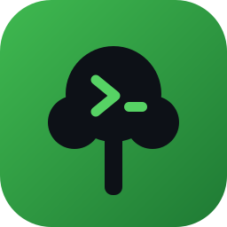

Create, sync, and operate across dozens of Git repositories with a single command — then wire them up to your favorite coding agent so “work on the payments stack” becomes one prompt.
npm install -g @nemus-cli/nemus
Modern products span many repositories. Nemus keeps a workspace — a named folder of related repos — in sync and lets you act across all of them at once.
Group repos, clone them all in parallel, and jump straight in.
status, sync, diff, run, and branch across every repo in one command.
Save reusable repo collections and capture exact workspace states.
First-class integration with multiple coding agents, context files, skills & an MCP server.
Health checks, dependency analysis, and retries on flaky networks.
Create an empty workspace and let an agent discover and add the repos it needs.
Install globally, configure once, then create your first workspace.
# Install globally npm install -g @nemus-cli/nemus # One-time setup (choose your GitHub org, agent, clone protocol…) nemus configure # Create your first workspace (interactive repo picker with fuzzy search) nemus create # …or let an agent do it — describe what you need in plain English nemus -- "set up a workspace for the payments stack and start on the refund bug"
Nemus generates context files, installs skills, and runs an MCP server so your agent understands the whole workspace — not just one repo.
Every workspace gets its own independent, full git clone of each
repo: separate .git, index, stash, hooks, config, branches, and build outputs.
git worktree? Worktrees share one object store and are
great for one repo. Nemus is built for many repos worked on in parallel — often by
AI agents — where total isolation wins: two workspaces can both sit on main, and
one agent’s rebase, gc, or dirty tree can’t touch another’s.
# Operate across every repo at once nemus status my-stack nemus sync my-stack nemus run my-stack "npm test" nemus branch my-stack feature/x # Save & reuse a set of repos nemus suite create payments nemus create --suite payments
This site ships an llms.txt — a concise,
structured overview of Nemus in the llmstxt.org format, so an
LLM can read the project at a glance and follow links to the full docs.